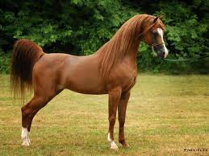

Friesians, a breed of horse, is a light draft horse. Draft horses are thick boned, strong, and tall. Friesians have a swanlike neck and are also beautiful to watch. They also have feathers which are extra long fur around a horses hooves and an abundant mane and tail. Friesians are best suited for driving, dressage, and elegant pleasure riding. Their origin is the area along the coast of the North Sea once known as Friesland. They also have special qualites such as a striking profile, regal bearing, and solid black color. The silhouette of a Friesian is virtually unmistakable, with a noble head set on a long, gracefully arched neck.
Shires, a breed of horse, is a heavy draft horse. Draft horses are thick boned, strong, and tall. Shires have a long, lean head and a slightly roman nose; long, arched, upright neck, deep sloping shoulders, and a broad chest; a deep girth, short back, and sloping croup; they also have large hooves. They can be black, brown, bay ( a blackish brown color), gray, and chestnut; they can also have some white facial and leg markings. Shires are best suited for farm work, logging, and pulling carriages or wagons. They originate from England and have special qualities such as being the tallest of the draft breeds and heaviest after the Brabant plus having very heavy feathering ( feathers are extra long fur around thier hooves). Shires descend from the heavy horse used by the armies of King Henry II ( 1154-1189 ). Its lush feathering was developed to protect its legs from the wet and muddy conditions of the English contryside.

Shetland ponies, a breed of horse, are ponies (ponies are smaller than horses). Shetland ponies have a short, clean-cut neck with a fine muzzle and brilliant eyes; well balanced, strong sturdy body; full mane and tail; and a high tail set. Shetland ponies can be born in any color exept Apaloosa. They are best suited for driving and are a traditional childs riding pony. Shetland ponies have sspecial qualities such as being a small, sound, versatile breed of great hardiness. They originate from the Shetland Islands, Great Britian with probable ancestral roots in Scandinavia. These hardy ponies are exellent mounts for children and fine family pets. Shetland ponies are good movers, nice jumpers, and first rate, fun driving ponies for the entire family.
Arabians, a breed of horse, is not a draft horse. Arabians, also known as Arabs, have a dished profile, expressive eyes, wide forehead, small muzzle; arched neck, and high tail carriage. Arabs can be born in bay, gray, black, chestnut, or roan always with black skin. They are best suited for endurance, pleasure riding, and showing. Arabs originate from the Middle East especially Iran, Iraq, Syria, Turkey, and Jordan. They have special qualities such as great beauty, tremendous endurance, and an unflagging spirit. Arabs are among the most beatiful of all horses, this breed is also one of the oldest recognizable types in